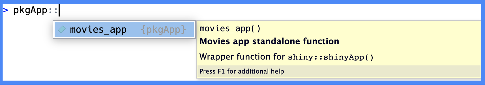
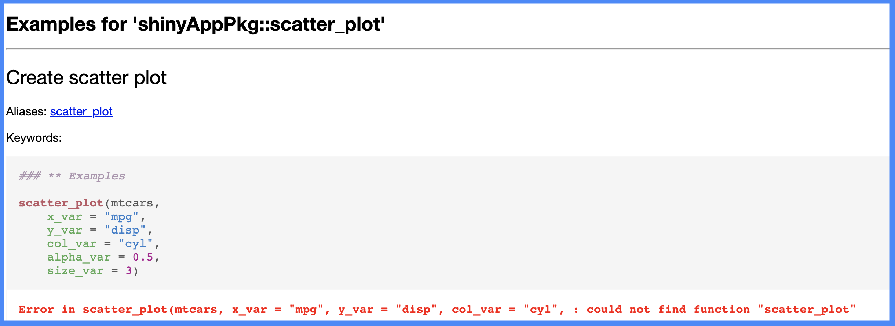
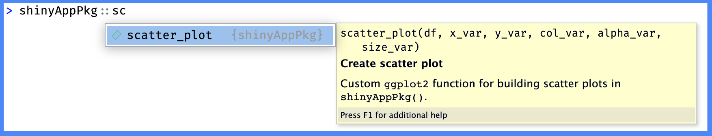
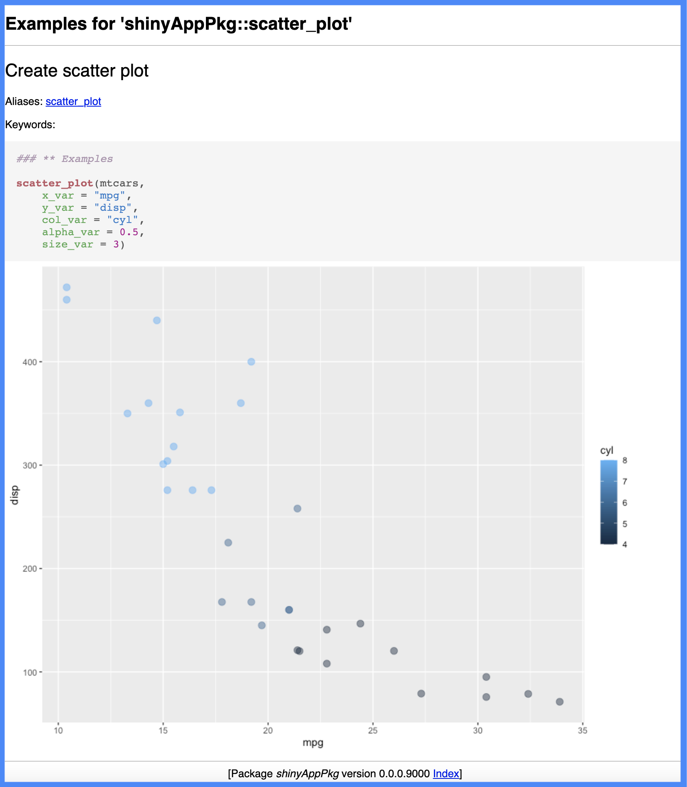

pkgApp/
├── DESCRIPTION
├── NAMESPACE
├── R/
│ ├── mod_scatter_display.R
│ ├── mod_var_input.R
│ ├── movies_app.R
│ ├── movies_server.R
│ ├── movies_ui.R
│ └── utils.R
├── README.md
├── app.R
├── man/
│ ├── mod_scatter_display_server.Rd
│ ├── mod_scatter_display_ui.Rd
│ ├── mod_var_input_server.Rd
│ ├── mod_var_input_ui.Rd
│ ├── movies_app.Rd
│ ├── movies_server.Rd
│ ├── movies_ui.Rd
│ └── scatter_plot.Rd
├── movies.RData
├── pkgApp.Rproj
└── www/
└── shiny.png
4 directories, 21 filesDependencies
Caution
This chapter is currently being revised.
The previous chapter showed how to document the functions with roxygen2. In this chapter we’ll cover how to manage dependencies in your new app-package.
TLDR
Managing dependencies:
Exports: export objects from using
@export. Exported functions are the functions that an app-package offers to the world (i.e., someone installs and loads the package, these are the functions they can directly use).-
Imports: import functions from add-on packages using a ‘fully qualified variable reference’ (i.e.,
pkg::fun()) in the code belowR/and add the package name to theImportsfield in theDESCRIPTION.If the object can’t be imported using
::(i.e., an operator), use the@importFromtag fromroxygen2If your code uses a lot of functions from another package (such as
shinyin app-packages), use the@importtag fromroxygen2
Workflow: List the add-on package in the Imports field of the DESCRIPTION file (i.e., with usethis::use_package('pkg')), then decide if you’re going to the functions in pkg with pkg::fun() (preferred), @importFrom, or @import.
Dependencies are the must-have components for your app-package, and they’re divided into imports and exports. Imports are the functions we’re borrowing from add-on packages (any packages no automatically loaded in a new R session), and exports are the functions, data, and other R objects our app-package offers to users.
Dependencies are handled using roxygen2 tags (to generate the NAMESPACE) and three fields in the DESCRIPTION file (Suggests, Imports, or Depends). If you’d like a refresher on documenting functions with roxygen2, a summary of the previous chapter is available below:
Chapter 4 recap: documenting functions with
roxygen2
Required @tags for all functions:
- Make sure all functions have a documented title & description (
@titleand@descriptiontags optional), function inputs and outputs (@paramand@return), and demonstrations of how the function works (@examples)
Shiny-specific documentation:
Use
@seealsoto link module UI and server functions, and@familyto link functions within a similar topic (i.e., ‘import data’ or ‘scatter plot’)Provide shiny-specific information (use within the app, reactive state, more details about the
@params, etc.) in@sectionblocks.
See the roxygen2 branch for more information
pkgApp
We will use the 02_roxygen2 branch of pkgApp from the end of the previous chapter. Below is a folder tree of its contents:
When in doubt…
Load, document, and install
While developing your app-package, you might lose track of which devtools function you ran last (I know I do). If this happens, I’ve found loading, documenting, and installing help re-orient me to the current state of the package.
Ctrl/Cmd + Shift + L / D / B
ℹ Loading pkgApp==> devtools::document(roclets = c('rd', 'collate', 'namespace'))
ℹ Updating pkgApp documentation
ℹ Loading pkgApp
Documentation completed==> R CMD INSTALL --preclean --no-multiarch --with-keep.source pkgApp
* installing to library ‘/path/to/local/install/pkgApp-090c61fc/R-4.2/x86_64-apple-darwin17.0’
* installing *source* package ‘pkgApp’ ...
** using staged installation
** R
** byte-compile and prepare package for lazy loading
** help
*** installing help indices
** building package indices
** testing if installed package can be loaded from temporary location
** testing if installed package can be loaded from final location
** testing if installed package keeps a record of temporary installation path
* DONE (pkgApp)
Restarting R session...
> library(pkgApp)It’s also satisfying to see all three functions execute without any errors!
Identifying dependencies
The first step in managing dependencies is identifying which add-on packages pkgApp relies on. Our goal is to limit the dependencies to only those critical to the functioning of our app, because each additional dependency is a potential point of failure (should this package become unavailable or significantly change).
I’ve made this process somewhat easier by explicitly namespacing all of the add-on package functions in pkgApp (i.e., with pkg::fun()). You’ll learn more about explicit namespacing in the following sections.
Running movies_app()
In the last chapter, we moved and documented the standalone app function (movies_app()) in the R/ folder. The app.R file now only contains the following:
# pkgs <- c("shiny", "shinythemes", "stringr", "ggplot2", "rlang")
# install.packages(pkgs, quiet = TRUE)
# packages ------------------------------------
library(shiny)
library(shinythemes)
library(stringr)
library(ggplot2)
library(rlang)
# movies_app ------------------------------------
movies_app()Ideally, we’ll want to replace these calls to libary(), but first we have to make sure the functions we’re using in these packages will be available in pkgApp.
When we run the contents of app.R, we see the following:
> library(pkgApp)
> # pkgs <- c("shiny", "shinythemes", "stringr", "ggplot2", "rlang")
> # install.packages(pkgs, quiet = TRUE)
>
> # packages ------------------------------------
> library(shiny)
> library(shinythemes)
> library(stringr)
> library(ggplot2)
> library(rlang)
>
> # movies_app ------------------------------------
> movies_app()
Error in movies_app() : could not find function "movies_app"Why can’t R find the "movies_app" function in app.R?
Let’s recap what we’ve done so far:
app.R
-
app.Rloads the necessary packages and callsmovies_app()
pkgApp/
└── app.RR/
-
The
R/movies_app.Rfile contains the code and documentation formovies_app()
pkgApp/
└── R/
└── movies_app.Rman/
-
roxygen2is generating theman/movies_app.Rdfile
pkgApp/
└── man/
└── movies_app.RdThe error tells me that despite having documentation for movies_app() in R/ and generating the corresponding .Rd file in man/, the movies_app() function isn’t being exported from pkgApp.
Exports
The exact cause of the error above becomes more apparent when we try to explicitly namespace movies_app() from pkgApp:
pkgApp::movies_app()Error: 'movies_app' is not an exported object from 'namespace:pkgApp'
This section’s code is in the pkgApp repo’s 03_pkg-exports branch
To make the movies_app() function available to users of our package, we need to export it. We export functions by including the @export tag in the roxygen2 comment block (above the function we want to export):
-
@export: The function name (my_func) is not required.#' @export my_func #' my_func <- function() { #' #' }- Read more here
Exporting movies_app()
Let’s start by exporting the movies_app() function from pkgApp by placing the @export tag above the function in R/movies_app.R:
#' Movies app standalone function
#'
#' Wrapper function for `shiny::shinyApp()`
#'
#' @return shiny app
#'
#'
#' @seealso [mod_var_input_ui()], [mod_var_input_server()], [mod_scatter_display_ui()], [mod_scatter_display_server()]
#'
#' @export
#'
movies_app <- function() {
shiny::shinyApp(ui = movies_ui, server = movies_server)
}In app.R, we’ll replace the calls to library() with a single call to library(pkgApp)
# packages ------------------------------------
library(pkgApp)
# movies_app ------------------------------------
movies_app()We’ll load, document, and install the package to generate the NAMESPACE changes:
Ctrl/Cmd + Shift + L / D / B
Now, when we run the code app.R, we see the following:

movies_app()We’ve lost the shiny icon (www/shiny.png) in the UI, but we’ll address this in the inst/ & www/ chapter.
movies_app() launches our application!
The NAMESPACE file now contains a single export (movies_app), and when we enter pkgApp:: in the Console, we see the movies_app() function help file in the tab completion.

NAMESPACE
pkgApp namespacemovies_app() is now part of the pkgApp namespaceWhat @export does
We’ll pause here to notice a few things about what @export does. After loading, documenting, and installing pkgApp, the NAMESPACE is updated with export(movies_app), and the Console automatically calls library(pkgApp).
ls() returns “the names of the objects in the specified environment, so we can use it to confirm the movies_app() function is the only export from pkgApp:
ls(name = "package:pkgApp")[1] "movies_app"The search() list
library(pkgApp) attaches pkgApp to the search list. We can view all the attached packages in the string returned from search():
"package:pkgApp" %in% search()[1] TRUEWhat about the functions from add-on packages movies_app() relies on, like ggplot2?
Let’s check to see if ggplot2 is also attached to the search() list:
[1] FALSEWhy does this matter? Because if these packages aren’t attached to the search() list, we can’t call their functions the way we would if we’d used library().
For example, if we try to use ggplot2 to build a plot (similar to the one we have in the app), we see the following:
ggplot(data = mtcars,
aes(x = disp, y = mpg)) +
geom_point()Error in ggplot(data = mtcars,
aes(x = disp, y = mpg)) :
could not find function "ggplot"If we want to use functions from the packages pkgApp relies on, we need to explicitly namespace these functions from their original package namespaces (i.e., pkg::fun()):
ggplot2::ggplot(data = mtcars,
ggplot2::aes(x = disp, y = mpg)) +
ggplot2::geom_point()
ggplot2 if we explicitly namespace it’s functions
Accessing add-on package functions
When a user loads pkgApp with library(pkgApp), any add-on package functions used in exports are available to users if they use pkg::fun() (or if they load the package themselves with library()).
Access to add-on package functions has implications for the other functions in pkgApp–for example, the scatter_plot() function uses ggplot2 functions. But we’re not exporting scatter_plot(), so when we attempt to run the examples, we see the following error:

scatter_plot()
scatter_plot() examplesscatter_plot() function without exportingExamples for ‘pkgApp::scatter_plot’
The message at the top of the Help pane is informative because it tells us that despite scatter_plot() being functional when we run movies_app(), it’s not part of the package namespace (and thus, not accessible to users in the help file).
Exporting scatter_plot()
Shiny apps often contain utility functions in helper.R or utils.R files. Storing non-shiny code in these files isn’t a bad practice (in fact, it’s encouraged in Mastering Shiny). However, if we’re following the advice in R Packages, we should rename R/utils.R as we transition to an app-package,
‘most of our packages have a
utils.Rfile (Section 6.1) that contains small utility functions that are useful internally, but aren’t part of the core purpose of those packages. We don’t export such functions.’
R/utils.R >> R/scatter_plot.R
From now on, I’ve renamed R/utils.R to R/scatter_plot.R, so it aligns with the naming conventions in other R packages.
For a deep dive on R/utils.R files in R packages, I recommend reading Dissecting R Package “Utility Belts”
Let’s add the @export tag to R/scatter_plot.R so it’s exported from pkgApp.
#' Create scatter plot
#'
#' Custom [`ggplot2`](https://ggplot2.tidyverse.org/) function for building scatter plots in `pkgApp()`.
#'
#'
#' @param df `data.frame` or `tibble`
#' @param x_var string variable mapped to `x` axis
#' @param y_var string variable mapped to `y` axis
#' @param col_var string variable mapped to `color`
#' @param alpha_var number for point `alpha`
#' @param size_var number for point `size`
#'
#' @return A `ggplot2` plot object
#'
#'
#' @examples
#' scatter_plot(mtcars,
#' x_var = "mpg",
#' y_var = "disp",
#' col_var = "cyl",
#' alpha_var = 0.5,
#' size_var = 3)
#'
#' @seealso [mod_scatter_display_server()]
#'
#' @export
#' After loading, documenting, and installing pkgApp, the NAMESPACE is updated with the export() directive:
Ctrl/Cmd + Shift + L / D / B
The contents of the updated NAMESPACE file are below (and pkgApp:: in the Console now displays the scatter_plot() help file in the tab completion):

@export the scatter_plot function
pkgApp::scatter_plot()scatter_plot() is now part of the pkgApp namespaceBelow, we confirm users can access the help file for scatter_plot() and run the examples:

scatter_plot() examples?scatter_plotloadedNamespaces()
We’ve already confirmed that ggplot2 isn’t attached with pkgApp (and hence, it is not included in the search() list)
[1] FALSEHowever, we can access the functions we used the pkg::fun() syntax with because those functions are included in the loaded namespaces (which we can view with loadedNamespaces())
c("ggplot2") %in% loadedNamespaces()[1] TRUEWhat to @export
“When a user calls library(pkgApp), what functions do I want to be available?”
When determining which functions to export, consider the question above. R Packages, 2ed also offers the following advice on what shouldn’t be exported:
‘We believe that packages that have a wide audience should strive to do one thing and do it well. All functions in a package should be related to a single problem (or a set of closely related problems). Any functions not related to that purpose should not be exported.’ - What to export, R Packages, 2ed
There are multiple ways to interpret the advice above in the context of a shiny app-package:
If we take a narrow view of the word ‘problem’ to mean ‘create a way to visualize relationships in movie review data’, then maybe we’d consider it solved by only exporting the standalone app function.
If the ‘problem’
pkgAppsolves is ‘creating a shiny movies app’, we might also want to export any functions that perform distinct tasks with potentially reusable functionality (i.e., generate specific UI components, perform data processing tasks, etc.).Extending the ‘problem’ statement to the broadest possible definition would assume users will want access to all the functions in
pkgApp–this would allow them to customize, extend, or integrate the contents ofpkgAppwith other tools. You’ll rarely want to export everything from your app-package, but it can be helpful if your primary audience is other developers within your organization.
My advice on exports is to balance simplicity and utility when deciding on exported functions.
Low-key
@exports with @keywords internal
If you’d like function to be exported, but not listed in the package index, you can combine @export with @keywords internal. These should be used in combination,
#' @export
#'
#' @keywords internalFor example, adding @export and @keywords internal to R/scatter_plot.R will make the function accessible to users:

And include the help file:

However, if a user were to click on the Index for pkgApp (at the bottom of the help file)

scatter_plot is not listed:

Imports
This section’s code is in the pkgApp repo’s 04_pkg-imports branch
Handing imports is slightly more involved than package exports because imported dependencies can live in DESCRIPTION and the NAMESPACE.
The DESCRIPTION file handles package-level dependencies, specifying which packages pkgApp uses. These packages are installed whenever a user installs pkgApp.
On the other hand, the NAMESPACE directives manage function-level access, importing functions from other packages to be used in pkgApp and–as we’ve seen above–exporting functions from pkgApp for others to use.
When pkgApp is documented (i.e., Ctrl/Cmd + Shift + D), roxygen2 tags update the NAMESPACE with any imports or exports. However, the DESCRIPTION file must be edited independently:
Ctrl/Cmd + Shift + D updates the NAMESPACE, but it doesn’t change anything in the DESCRIPTION file.

roxygen2 does not connect the NAMESPACE to the DESCRIPTIONroxygen2 & NAMESPACE = function-level access vs. DESCRIPTION = package-level dependenciesThe differences between the dependencies listed in the NAMESPACE directives and the Imports field in the DESCRIPTION file can be a common point of confusion 1, which is understandable if you’ve consulted Writing R Extensions (specifically the sections on dependencies 2 and namespaces.3
I’ve attempted to distill and consolidate the advice I’ve found when I’ve gone looking for (and had trouble finding) answers to the following questions:
How and where should I be importing add-on functions and packages?
Why and when should I import add-on packages/functions? and
What happens when a package or function is imported?
I’ve also emphasized the parts I’ve found worth committing to memory.
How and where?
There are three ways to import dependencies:
- Use a ‘fully qualified variable reference’ (i.e., the
pkg::fun()syntax)4 for calls to add-on functions in theR/folder
List add-on packages in the
Importsfield of theDESCRIPTIONfileInclude an
@importor@importFromtag for add-on packages in theR/folderroxygen25
How and where in pkgApp
We’re already using pkg::fun() in the two exported functions from pkgApp (movies_app() and scatter_plot()):
-
pkg::fun()inmovies_app():
show/hide explicit namespacing in movies_app()
movies_app <- function() {
shiny::shinyApp(ui = movies_ui, server = movies_server)
}-
pkg::fun()inscatter_plot():
show/hide explicit namespacing in scatter_plot()
scatter_plot <- function(df, x_var, y_var, col_var, alpha_var, size_var) {
ggplot2::ggplot(data = df,
ggplot2::aes(x = .data[[x_var]],
y = .data[[y_var]],
color = .data[[col_var]])) +
ggplot2::geom_point(alpha = alpha_var, size = size_var)
}Now let’s cover when and why to list these packages and functions as imports.
When and why?
Knowing when and why to use each import method is just as important as knowing how and where to import add-on packages and functions.
I’ve done my best to distill the available information into actionable decisions below:
When and why in pkgApp
I’ve found the best guidance on when and why to use each method (pkg::fun(), Imports in the DESCRIPTION, or @import/@importFrom) comes from the roxygen2 documentation:
“if you are using just a few functions from another package, we recommending adding the package to the
Imports:field of theDESCRIPTIONfile and calling the functions explicitly using::, e.g.,pkg::fun()”“If the repetition of the package name becomes annoying you can
@importFromand drop the [pkg::fun()]” - Importing functions
Following this advice (and the exceptions to the rule regarding ‘heavy use’11 and ‘operators’12 from add-on packages) we can:
-
Replace the explicit namespacing from all calls to
shinyfunctions (i.e.,shiny::) with the@importtag inR/movies_app.R:
show/hide @import in movies_app()
#' Movies app standalone function
#'
#' Wrapper function for `shinyApp()`
#'
#' @return shiny app
#'
#'
#' @seealso [mod_var_input_ui()], [mod_var_input_server()], [mod_scatter_display_ui()], [mod_scatter_display_server()]
#'
#' @import shiny
#'
#' @export
#'
movies_app <- function() {
shinyApp(ui = movies_ui, server = movies_server)
}-
Include
@importFromfor the use of.datainR/scatter_plot.R:
show/hide @importFrom in scatter_plot()
#' Create scatter plot
#'
#' Custom [`ggplot2`](https://ggplot2.tidyverse.org/) function for building scatter plots in `pkgApp()`.
#'
#'
#' @param df `data.frame` or `tibble`
#' @param x_var string variable mapped to `x` axis
#' @param y_var string variable mapped to `y` axis
#' @param col_var string variable mapped to `color`
#' @param alpha_var number for point `alpha`
#' @param size_var number for point `size`
#'
#' @return A `ggplot2` plot object
#'
#'
#' @examples
#' scatter_plot(mtcars,
#' x_var = "mpg",
#' y_var = "disp",
#' col_var = "cyl",
#' alpha_var = 0.5,
#' size_var = 3)
#'
#' @seealso [mod_scatter_display_server()]
#'
#' @importFrom rlang .data
#'
#' @export
#'
scatter_plot <- function(df, x_var, y_var, col_var, alpha_var, size_var) {
ggplot2::ggplot(data = df,
ggplot2::aes(x = .data[[x_var]],
y = .data[[y_var]],
color = .data[[col_var]])) +
ggplot2::geom_point(alpha = alpha_var, size = size_var)
}Finally, we need to list each add-on package to the Imports field in the DESCRIPTION using usethis::use_package() (below is the output for ggplot2):
usethis::use_package("ggplot2")
✔ Setting active project to '/path/to/pkgApp'
✔ Adding 'ggplot2' to Imports field in DESCRIPTION
• Refer to functions with `ggplot2::fun()`After adding all add-on packages to the DESCRIPTION with usethis::use_package(), we’ll load, document, and install pkgApp:
Ctrl/Cmd + Shift + L / D / B
And we should review the updated NAMESPACE and DESCRIPTION files:

NAMESPACE with Imports and `importFrom
DESCRIPTION with all Importsroxygen2 will update the NAMESPACE, but usethis::use_package() is needed to update the DESCRIPTIONWhen we run movies_app(), we see the application launches and we can still run the scatter_plot() examples:
movies_app() works?scatter_plotpkgAppIn the next section, we’re going to cover what happens when these packages and functions were included as imports in pkgApp.
What happens?
What happens to imported packages and functions can get a bit technical, but I’ve done my best to include what I consider to be the necessary distinctions between using pkg::fun(), the @import/@importFrom tags, and the Imports field in the DESCRIPTION.
I strongly encourage reading the namespaces section of Advanced R, 2ed for a deeper understanding of these topics.
What happened in pkgApp
First, let’s confirm we’re still only exporting movies_app() and scatter_plot() from pkgApp:
ls(name = "package:pkgApp")[1] "movies_app" "scatter_plot"Great. Now we’ve listed five packages in the Imports field of the DESCRIPTION file:
Imports:
ggplot2,
rlang,
shiny,
shinythemes,
stringrThe search() list
Are these packages on the search list?
[1] FALSE FALSE FALSE FALSE FALSEThis demonstrates that none of these packages are attached with pkgApp. However, the rlang and shiny packages are included in the loadedNamespaces() (because we included them with @import/@importFrom).
pkgs <- c("ggplot2", "rlang", "shiny",
"shinythemes", "stringr")
pkgs %in% loadedNamespaces()[1] FALSE TRUE TRUE FALSE FALSEWe can still access the add-on package functions in pkgApp using the pkg::fun() syntax:
ggplot2::ggplot(data = mtcars,
ggplot2::aes(x = disp, y = mpg)) +
ggplot2::geom_point()
ggplot2 functions are still available if we explicitly namespaceChecking dependencies
With all the moving parts in dependency management, it can be easy to forget if you’ve documented everything correctly. So far we haven’t covered using devtools::check() as part of your app-package habits (which is fine), but this is one area it’s particularly helpful.
For example, if I had listed shiny as an import using the @import tag (resulting in the import(shiny) directive in the NAMESPACE), devtools::check() would produce the following error:
── R CMD check results ────────────────────────── pkgApp 0.0.0.9000 ────
Duration: 7.4s
❯ checking package dependencies ... ERROR
Namespace dependency missing from DESCRIPTION Imports/Depends entries: ‘shiny’
See section ‘The DESCRIPTION file’ in the ‘Writing R Extensions’
manual.
1 error ✖ | 0 warnings ✔ | 0 notes ✔
Error: R CMD check found ERRORs
Execution halted
Exited with status 1.Recap
Below are the main takeaways from managing the imports and exports from your app-package:
Dependencies recap
This chapter covered:
Exports: Aim for a balance between simplicity and utility when deciding which functions to export (i.e., what functions should be available to users who install your package). Export objects from using
@export-
Imports: Use
pkg::fun()syntax when you use add-on package functions and include them in theImportsfield of theDESCRIPTIONfile. App-packages use so manyshinyfunctions it makes sense to include@import shinyto 1) ensure all of these functions are available, and 2) you won’t need to usepkg::fun().DESCRIPTIONImportsThis field lists the packages your app-package uses. All add-on packages used in theR/folder must be listed in theImportsfield. These functions can be called using thepkg::fun()syntax (or with@importFrom()). Functions from these packages will be available for your package, but not for the user unless they use the::operator or load the package themselves withlibrary().NAMESPACEimports: The@import/@importFromtags make the functions from add-on packages available to your package. Favor using@importFromover@importfor add-on package functions (the only exception beingshiny, which you’d want to use@import).
The Imports field in the DESCRIPTION handles package-level dependencies (and it is managed manually or with usethis::use_package()), while the NAMESPACE handles function-level access (with @export and @import/@importFrom).
In the next section, we’ll cover how the ensure the app.R file runs our application!
See the section titled, ‘Confusion about Imports’ in R Packages, 2ed, “Listing a package in
ImportsinDESCRIPTIONdoes not ‘import’ that package.”↩︎See section 1.1.3 Package Dependencies in Writing R Extensions↩︎
See section 1.5, Package namespaces in Writing R Extensions↩︎
We’re already using this method in the functions for
pkgApp↩︎The
@importand@importFromtags will add theimport()orimportFrom()directives in theNAMESPACE, respectively.↩︎The official R documentation assumes you’ll adding dependencies to the
DESCRIPTIONfile manually↩︎The official R documentation assumes you’ll be editing the
NAMESPACEmanually (i.e., withexport(),import(), andimportFrom()directives)↩︎This is the case for
ggplot2in our exportedscatter_plot()function frompkgApp↩︎App-packages should include
@import shinybecause nearly all the functions (modules, standalone app functions, etc.) will requireshiny.↩︎Our use of
.datainscatter_plot()requires@importFrombecause it’s not accessible with::fromrlang.↩︎“Sometimes you make such heavy use of so many functions from another package that you want to import its entire namespace.”, R Packages, 2ed, In code below
R/”↩︎“You can’t call an operator from another package via
::, so you must import it”, R Packages, 2ed, In code belowR/”↩︎